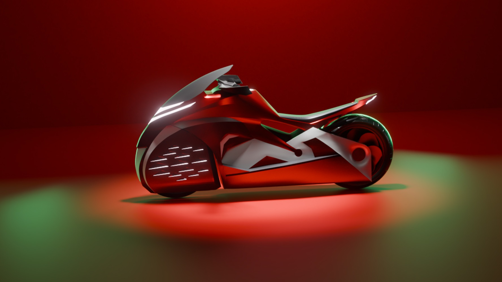
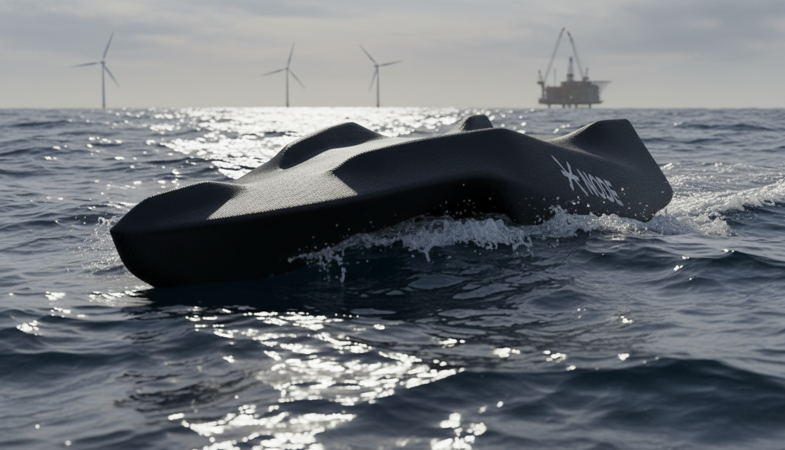
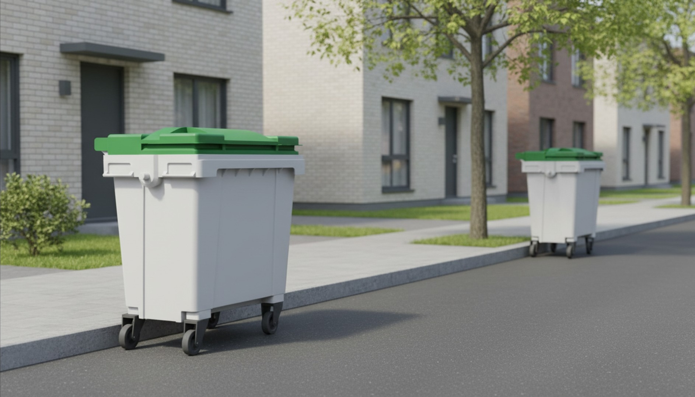
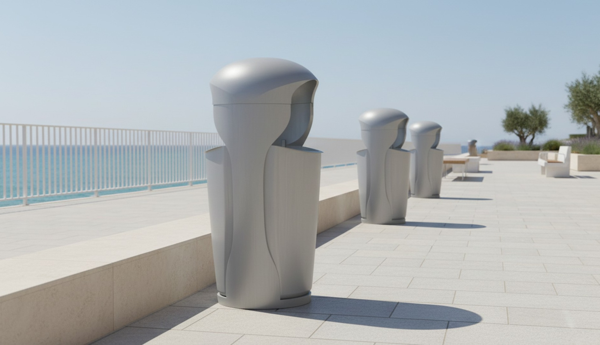
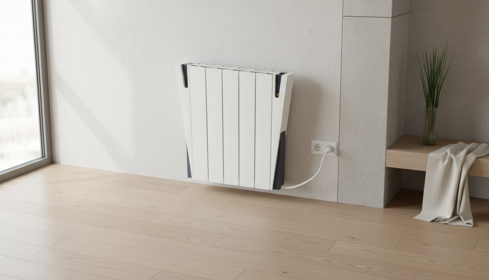
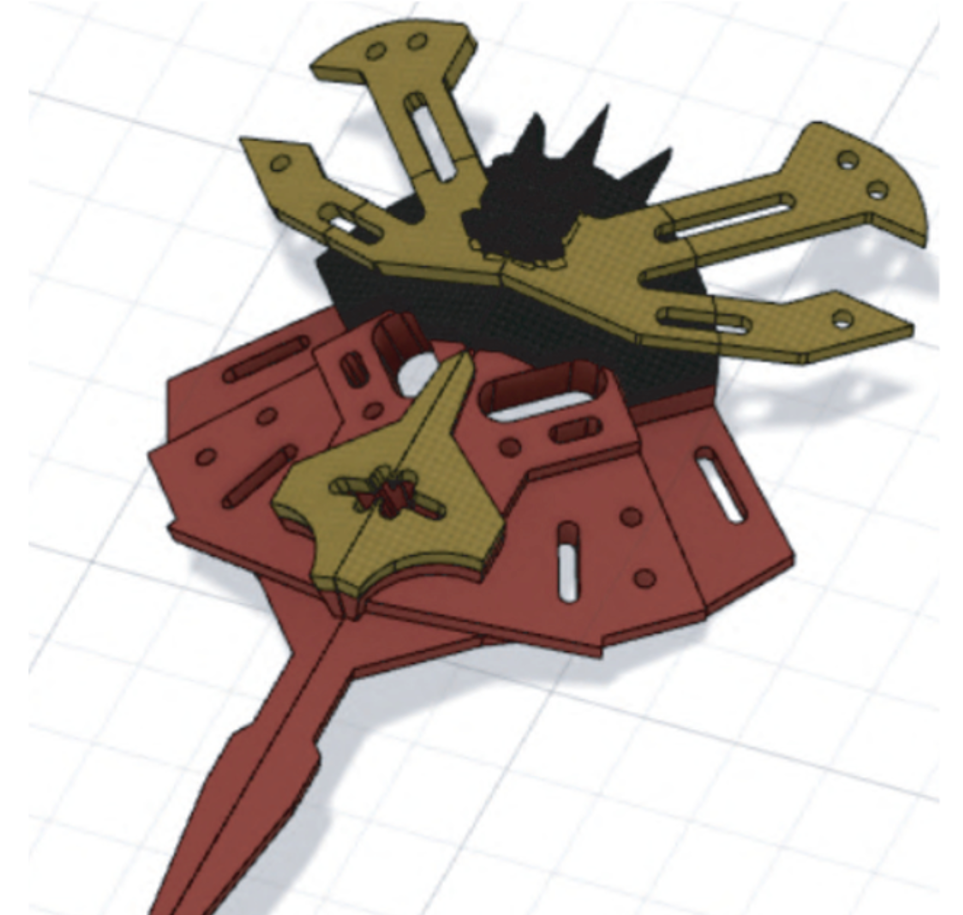
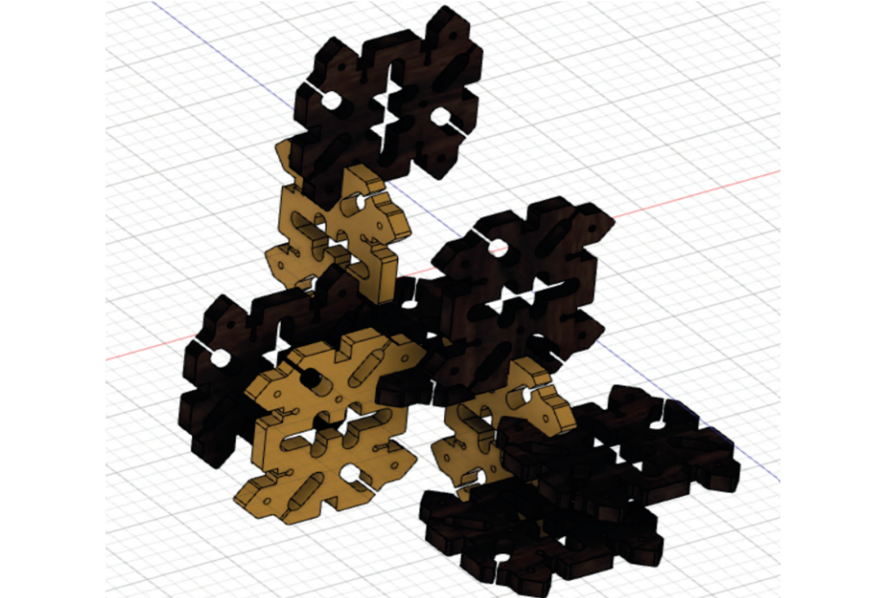

Antonio García Fernández
At the intersection of mobility, design and thought — designing vehicles where form, meaning and intention shape the way we move.
Selected
Works

Flagship ProjectAmphibious Moto

Autonomous Boat





Proraptor —
Amphibious Moto
A futuristic amphibious motorcycle designed for the Gen-Z adventurer. The Proraptor bridges land and water seamlessly with retractable hydrofoil technology, pneumatic flotation, and a hybrid powertrain — all wrapped in a cinematic, emotionally charged form language.
NODE —
Autonomous ASV
An autonomous surface vessel designed for the Njord 2026 physical challenge. Built entirely by students at Node Engineering Club. Features a custom 3D-printed hull, radar integration, and open-source autonomy systems. As Head of Exterior Design, I led the redesign of the hull, improving accessibility and aesthetic language.